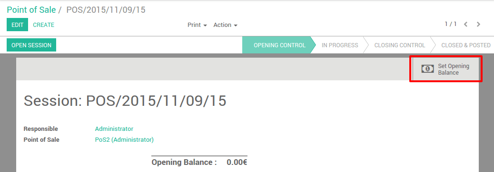
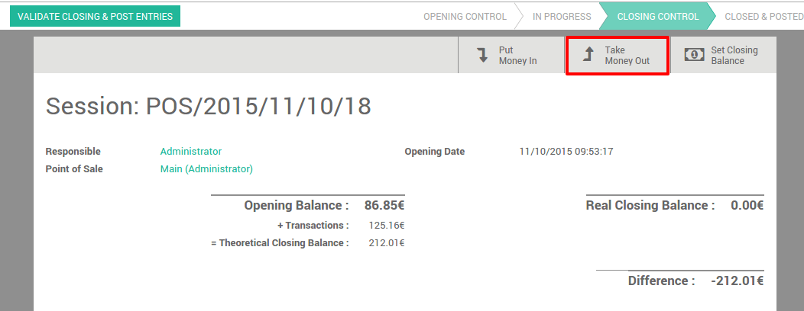
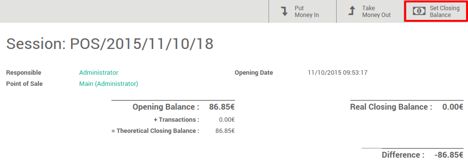

Учет наличных средств позволяет контролировать количество наличных денег при открытии и закрытии смены.
Конфигурация настроек учета наличных средств
На инфо-панели в приложении Рабочее Место Кассира нажмите на .

На этой странице пролистайте до параметра Учет наличных средств и поставьте галочку напротив этого пункат.

Открытие смены
На инфо-панели вашего РМК нажмите на кнопку новая смена:

Перед тем как будет запущен интерфейса РМК, вы должны ввести количество наличных средств в кассе, нажав на данный виджет.
Здесь вы можете внести номиналы монет и купюр, и указать их количество в денежном ящике. Система подсчитает общую сумму, в этом примере мы имеем 86,85 в кассе. Нажмите на кнопку Подтвердить.

Вы можете увидеть, что начальное сальдо изменилось и, когда вы нажимаете на Открыть смену вы перейдете на главную страница интерфейса РМК.
Регистрация продажи

Справа вы можете увидеть список ваших товаров с категориями в верху. Если Вы нажмете на продукт, он будет добавлен в чек. Вы можете установить нужное количество или вес, набрав его на клавиатуре.
Оплата
После того, как наполнение чека будет завершено, нажмите на кнопку Оплата. Вы можете выбрать способ оплаты. В этом примере, клиент должен вам 10.84 и платит 20€ одной купюрой. Когда вы внесли все необходимое, нажмите Утвердить.

Ваш чек печатается и теперь вы готовы сделать свою вторую продажу.
Закрытие смены
На момент закрытия сессии, нажмите на кнопку Закрыть в правом верхнем углу. Нажмите еще раз на кнопку Закрыть для выхода из интерфейса кассира. На этой странице вы увидите итоги продажи. В этот момент вы можете взять деньги.
Например, вы хотите увидеть все движения по вашей кассе.

Теперь вы можете увидеть, что теоретический баланс для закрытия был обновлен и вам остается только подсчитать свою кассу, чтобы установить конечное сальдо.
Теперь вы можете утвердить закрытие.